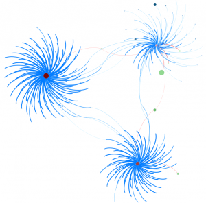
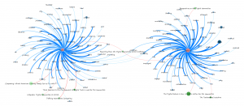
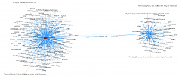
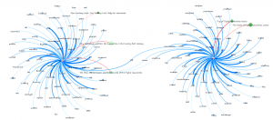
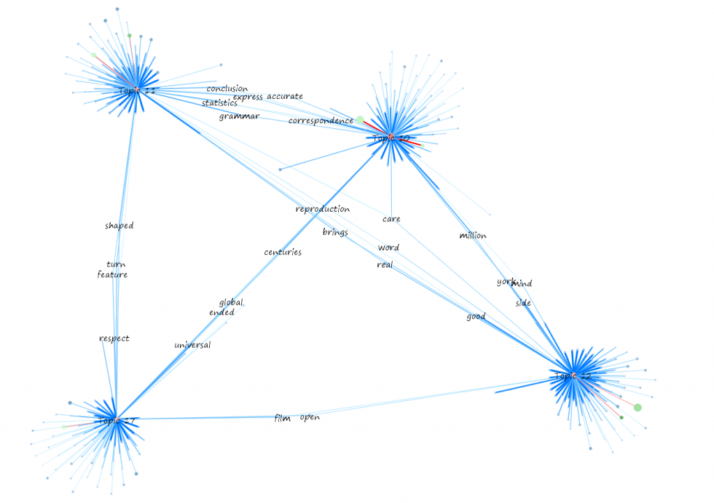
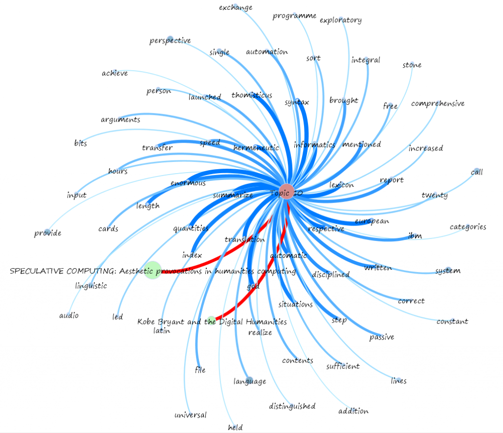
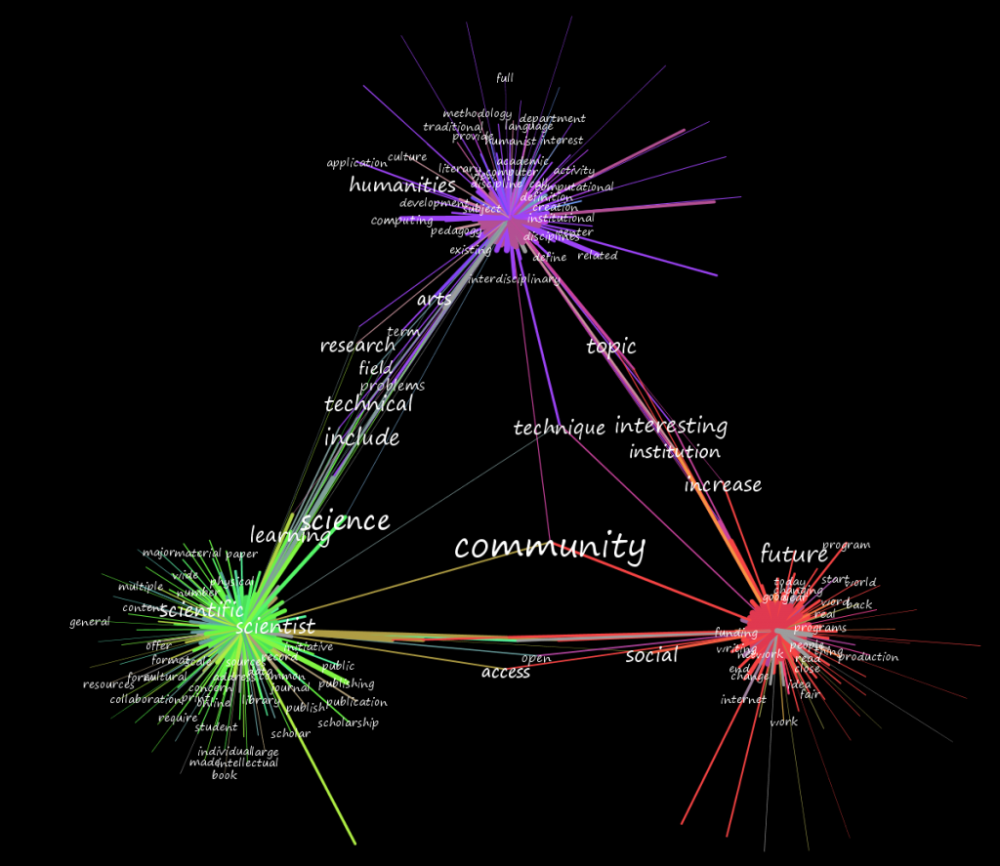
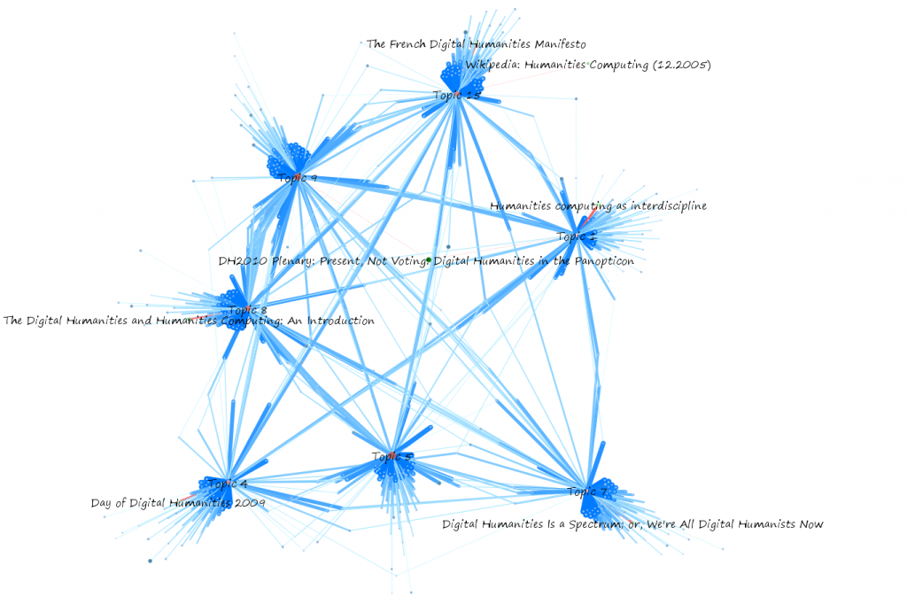
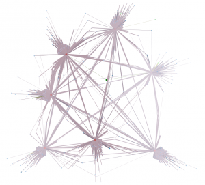
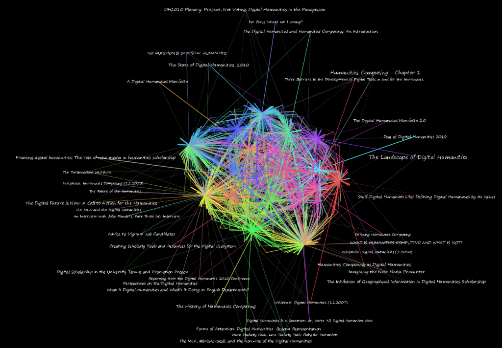

Comprehending the Digital Humanities
Topology
Topics
Documents
Data
Further Research
As stated on the topic modeling page for MALLET, “A ‘topic’ consists of a cluster of words that frequently occur together.” As such, like automated terrain analysis that is given an arbitrary number of containers in which to group regions of high similarity, each topic can have highly variant topology. A topic may consist of a small set of highly associated words, or it may consist of a large set of shared words that occur in a particular ratio, or any combination in between. Notably, the deformation of these topics is not uniform as the number of topics is increased.
As an analogy, imagine a piece of software meant to categorize a cubic meter of earth. If you give it just three categories, it might return with soil, rock and biological material. These are not equally represented in your sample but are the most self-similar. When giving the software more categories, it may identify silver ore and native silver in the same category. Given even more categories, it may separate those two. Given enough categories, then what was originally classified as “soil” in the first pass may end up in the same category as something that was originally classified as “rock” in the first pass. However, native silver (or any other small, highly self-similar material) has a much higher likelihood of maintaining its level of representation, once the level of granularity has reached a point wherein it is noticed, than other, less highly self-similar materials.
The same can occur with topics, and in this way a single, low-ranked topic can be seen to rise up the ranks as the same corpus is analyzed with an ever-increasing number of topics. These attributes of a topic can be illustrated as a topology for each topic, and through visualization can be compared qualitatively with a view toward intuitive classification.
In most of the images below, topics are colored red, with smaller size and lighter red indicating less centrality. Documents are in green, with size corresponding to the size of the document and lightness corresponding to less centrality. Words are in blue, with size corresponding to the total number of that word represented in the corpus and lightness corresponding to less centrality. Connections between words and topics are in blue, with thickness and darkness corresponding to percent of incidence of that word appearing in the connecting topic. Connections between topics and documents are in red, with thickness and brightness corresponding to strength of connection from topic to document.


The topologies of Topics 2, 14 and 16 are quite dissimilar and while they share some words and papers, should be examined to note the reason for such distinctly different topologies.


The topologies of Topic 18 and Topic 19, in comparison, are highly similar. There may be extreme qualitative differences due to the different words represented in each topic.


Topic 3 and Topic 13, though they share the word HASTAC in common, have extremely dissimilar topologies.


Topic 3 and Topic 6, again demonstrating highly similar topologies.

Higher order topological structures can also be examined qualitatively by looking at the interrelation between multiple topic modules.


The topological structure of these modules, using the same layout algorithm and weights, demonstrates a different relationship between these four topics.
To work with this kind of data, one ought to become comfortable with its fractal nature and recognizing patterns at very large scales.


Notice the distinct layers of the words here, and that there are whole papers more related to this topic than a third of its related words.
Medium scales…


Topics connected to the word "community". Color-coded by module.


Toplogy of seven modules.


Representation of those seven modules taking into account centrality of words, topics and papers, with lighter regions showing less centrality (within the entire 20-topic graph, and not just this selection)
And at very small scales.


The entire topic network, broken down by module.